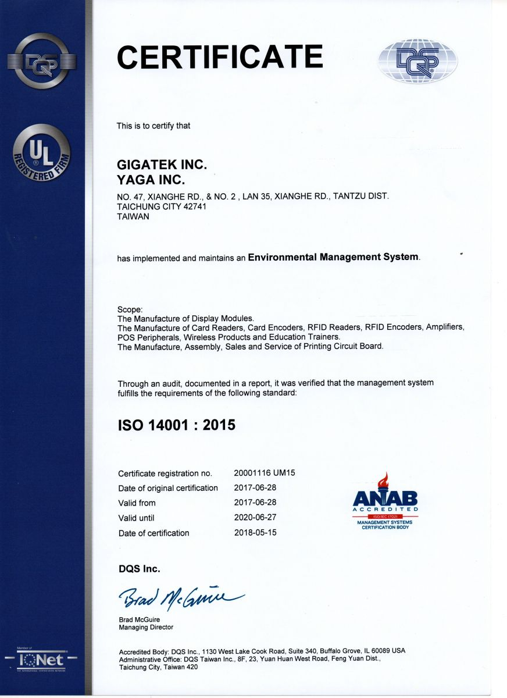

<script src="header.js"></script>

<main class="news-d">

<div class="inner">

	<div class="news-d-t">
		<div class="news-d-n">GIGATEK INC. and YAGA INC. Awarded the Certificate for ISO 14001:2015 Environment Management System</div>
		<div class="news-d-d">2017-06-28<span class="publisher"><i class="fas fa-pen-nib"></i>Chih-Chuan, Chen</span></div>


	</div>
	<div class="news-d-i">
		<p>
			To fulfill the corporate social responsibility and achieve the goal of sustainable operations, GIGATEK INC. and YAGA INC. announced that in June 2017, we were awarded the certificate for ISO14001:2015 Environment Management System by UL DQS Taiwan Inc., after the Taichung Campus of GIGATEK INC. was audited. 

		</p>
		<p>
			<div class="title">About ISO 14001:2015</div>
			  ISO 14001:2015 The purpose of ISO 14001:2015 is to provide organizations with a framework to protect the environment and respond to changing environmental conditions in balance with socio-economic needs. It specifies requirements that enable an organization to achieve the intended outcomes it sets for its EMS. An approach to environmental management can provide top management with information to build success over the long term. Companies can do the following to create a win-win situation:
			 <br><br>
			 1.      At each stage of the product lifecycle, including the design, manufacture (including procurement), transportation, delivery, usage, waste, and finial disposal, optimize and ensure the operational process, actively reduce the environmental impact, and fulfill the environmental protection responsibility.
			 <br><br>
			 2.      Develop, select, and use the environmentally friendly materials to reinforce the market position of companies.
			<br><br>
			3.      Establish the communication mechanism with stakeholders to disclose the relevant environment information, such us energy saving, carbon reduction, waste reduction, and so on.
			<br><br>
			 For more information about ISO14001:2015, visit&nbsp;&nbsp;<a href="https://www.iso.org/iso-14001-environmental-management.html" target="_blank"> https://www.iso.org/iso-14001-environmental-management.html</a>
		</p>
		
		<a class="venobox" href="public/SRC/images/news/ISO14001.jpg"></a>
	</div>
	<a href="news.php" class="btn">Back</a>
</div>

</main>

<nav class="bread">

	<div class="inner">

		<a href="index.php">Home</a><span class="bread-space">/</span><a href="news.php">NEWS</a>

	</div>


</nav>

<script src="footer.js"></script>